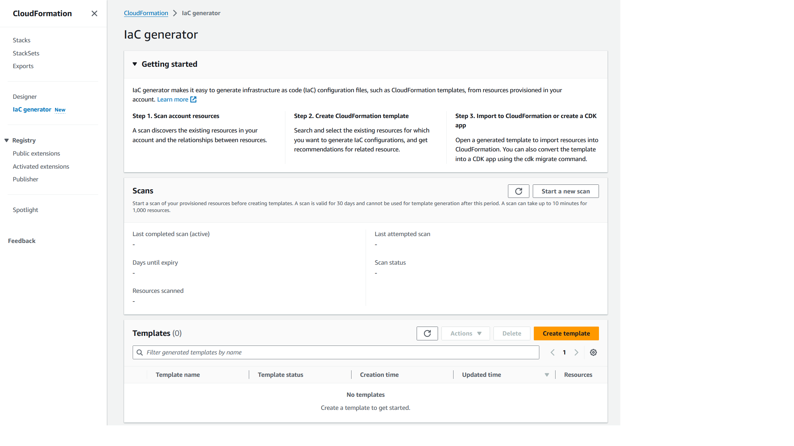
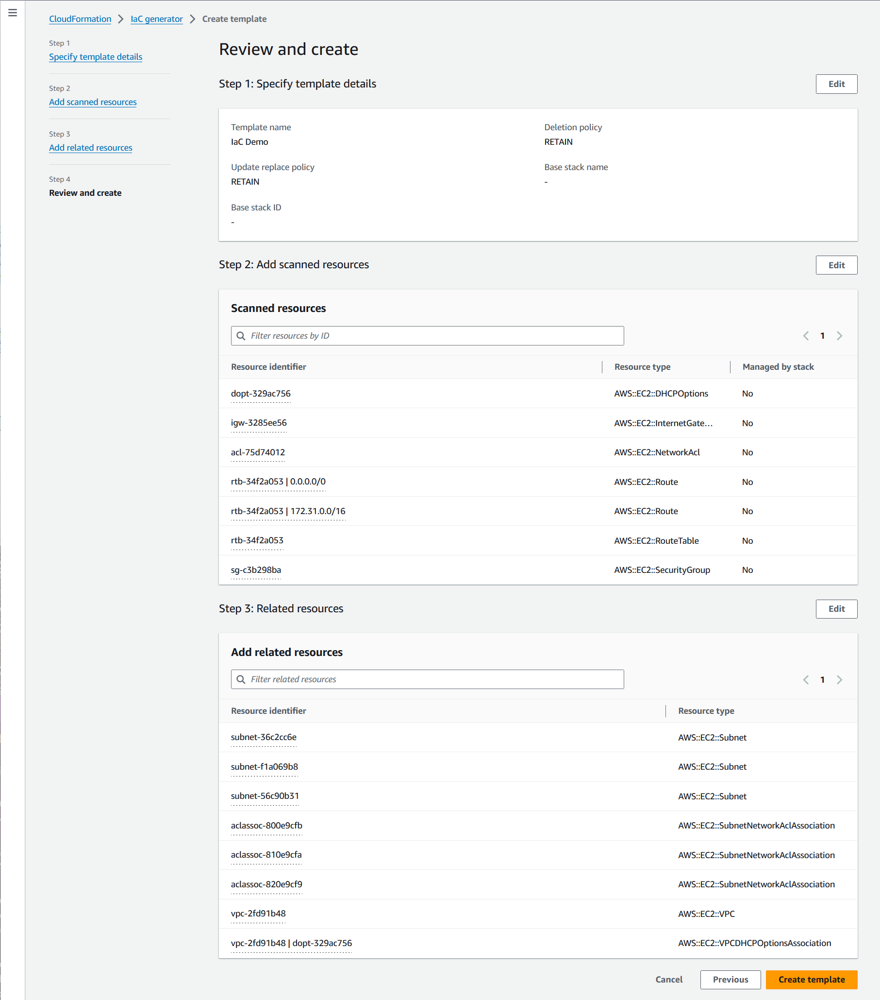

Die vorliegende Übersetzung wurde maschinell erstellt. Im Falle eines Konflikts oder eines Widerspruchs zwischen dieser übersetzten Fassung und der englischen Fassung (einschließlich infolge von Verzögerungen bei der Übersetzung) ist die englische Fassung maßgeblich.
Generieren von Vorlagen für vorhandene Ressourcen
Mit dem AWS CloudFormation IaC-Generator (Infrastruktur als Codegenerator) können Sie eine Vorlage mithilfe von AWS Ressourcen generieren, die in Ihrem Konto bereitgestellt werden und noch nicht von verwaltet werden CloudFormation. Verwenden Sie die Vorlage, um Ressourcen in ein neues Konto CloudFormation oder eine neue Region zu importieren oder zu replizieren.
Der IaC-Generierungsprozess besteht aus mehreren Schritten:
-
Starten Sie einen Scan Ihres Kontos.
-
Erstellen Sie eine Vorlage, entweder von Grund auf neu oder mithilfe der Vorlage eines vorhandenen Stacks als Ausgangspunkt.
-
Fügen Sie der Vorlage mithilfe des Assistenten zum Hinzufügen von Ressourcen gescannte Ressourcen und zugehörige Ressourcen hinzu.
-
Importieren Sie die Ressourcen, die von verwaltet werden sollen, CloudFormation als Stack oder migrieren Sie sie in eine AWS CDK App.
Das IaC-Generator-Feature ist in allen kommerziellen Regionen verfügbar und unterstützt viele gängige AWS Ressourcentypen. Eine vollständige Liste finden Sie unter Unterstützung von Ressourcentypen.
Themen
Überlegungen
Sie können - JSON oder -YAMLVorlagen für AWS Ressourcen generieren, die in der CloudFormation Registrierung veröffentlicht wurden, für Ressourcen, für die Sie über Leseberechtigungen verfügen. Die Vorlagen für die IaC-Generator-Fähigkeit modellieren Cloud-Ressourcen zuverlässig und schnell, ohne eine Ressourceneigenschaft nach Eigenschaft beschreiben zu müssen.
In der folgenden Tabelle sind die Kontingente aufgeführt, die für die IaC-Generierungsfunktion verfügbar sind.
| Name | Wert |
|---|---|
|
Maximale Anzahl von Ressourcen, die in einem Kontoscan verarbeitet werden können |
100000 |
|
Anzahl der Scans pro Tag (für Konten mit weniger als 10 000 Ressourcen) |
3 |
|
Anzahl der Scans pro Tag (für Konten mit mehr als 10 000 Ressourcen) |
1 |
|
Gleichzeitige Anzahl von Vorlagen, die pro Konto generiert werden |
5 |
|
Gleichzeitige Anzahl von Ressourcen, die für eine Vorlagengenerierung modelliert wurden. |
5 |
|
Gesamtzahl der Ressourcen, die in einer Vorlage modelliert werden können |
500 |
Wichtig
Der IaC-Generator unterstützt nur Ressourcen, die von der Cloud-Control-API in Ihrer Region unterstützt werden. Weitere Informationen finden Sie unter Ermitteln, ob ein Ressourcentyp die Cloud-Control-API unterstützt im Cloud-Control-API-Benutzerhandbuch.
Generieren einer Vorlage (Konsole)
In diesem Abschnitt wird beschrieben, wie Sie eine Vorlage erstellen, Ihrer Vorlage Ressourcen hinzufügen und Ressourcen mithilfe der IaC-Generatorfunktion aus der Vorlage in einen Stack importieren.
So öffnen Sie eine neue Vorlage mit dem IaC-Generator
Melden Sie sich bei der an AWS Management Console und öffnen Sie die - AWS CloudFormation Konsole unter https://console.aws.amazon.com/cloudformation
. -
Wählen Sie im Navigationsbereich IaC-Generator aus.
 -
Wählen Sie im Bereich Scans die Option Neuen Scan starten aus. Scans ermitteln die in Ihrem Konto bereitgestellten Ressourcen und die Beziehung zwischen Ressourcen. Je mehr Ressourcen Sie in Ihrem Konto in der Region haben, desto länger dauert der Scan.

-
Wählen Sie im Bereich Vorlagen die Option Vorlage erstellen aus.

-
Wählen Sie Von einer neuen Vorlage aus starten aus.
-
Geben Sie im Bereich Vorlagenname einen Namen für Ihre generierte Vorlage ein.
-
(Optional) Konfigurieren Sie Ihre Löschrichtlinie und Aktualisieren Sie die Ersetzungsrichtlinie .
-
Wählen Sie Weiter, um der Vorlage gescannte Ressourcen hinzuzufügen.
-
So fügen Sie Ihrer Vorlage gescannte Ressourcen hinzu
-
Durchsuchen Sie in der Liste der gescannten Ressourcen die Liste der gescannten Ressourcen. Sie können die Ressourcen nach Ressourcen-ID, Ressourcentyp oder Tags filtern. Die Filter sind gegenseitig inklusive.

-
Wählen Sie die Ressource oder die Ressourcen aus, die Sie hinzufügen möchten.
Wiederholen Sie die Schritte 1 und 2, bis Sie alle benötigten Ressourcen zu Ihrer Vorlage hinzugefügt haben.

-
Wählen Sie Weiter, um die Seite Gescannte Ressourcen hinzufügen zu beenden und mit der Seite Verwandte Ressourcen hinzufügen fortzufahren.
-
Sehen Sie sich eine empfohlene Liste verwandter Ressourcen an. Verwandte Ressourcen, wie Amazon EC2-Instances und Sicherheitsgruppen, sind voneinander abhängig und gehören in der Regel demselben Workload an. Wählen Sie die zugehörigen Ressourcen aus, die Sie in die generierte Vorlage aufnehmen möchten.
Anmerkung
Wir empfehlen, dass Sie dieser Vorlage alle zugehörigen Ressourcen hinzufügen.

-
Überprüfen Sie die Vorlagendetails, die gescannten Ressourcen und die zugehörigen Ressourcen. Wählen Sie Bearbeiten, um Änderungen vorzunehmen.
-
Wählen Sie Vorlage erstellen, um die Seite Überprüfen und erstellen zu verlassen und die Vorlage zu erstellen.

Ergebnisse: Sie haben mit der Erstellung Ihrer CloudFormation Vorlage begonnen und Ihre gescannten und zugehörigen Ressourcen hinzugefügt.
So importieren Sie Ressourcen, die von CloudFormation als Stack verwaltet werden sollen
-
Wählen Sie In Stack importieren und dann Weiter aus.
-
Geben Sie den Namen Ihres Stacks im Bereich Stack angeben der Seite Stack-Details angeben ein. Wählen Sie Weiter aus.
-
Überprüfen Sie die Parameter für den Stack und geben Sie sie ein. Wählen Sie Weiter aus.
-
Überprüfen Sie Ihre Optionen auf der Seite Änderungen überprüfen und wählen Sie Weiter aus.
-
Überprüfen Sie Ihre Details auf der Seite Überprüfen und importieren und wählen Sie Ressourcen importieren aus.
Ergebnis: Alle Ressourcen, die mit dem IaC-Generator zu Ihrer Vorlage hinzugefügt wurden, werden in einen CloudFormation Stack importiert.
Generieren einer Vorlage (AWS CLI)
In diesem Abschnitt wird beschrieben, wie Sie nach Ressourcen suchen, eine Vorlage erstellen, Ressourcen zu Ihrer Vorlage hinzufügen und sie aktualisieren und eine Vorlage mithilfe der löschen AWS CLI.
So suchen Sie nach Ressourcen in Ihrem Konto
-
Verwenden Sie die Operation , um nach Ressourcen in Ihrem Konto in der ausgewählten Region zu suchenstart-resource-scan.
$aws cloudformation start-resource-scanDer Befehl gibt Folgendes zurück:
{ "ResourceScanId": \ "arn:aws:cloudformation:us-east-1:123456789012:resourceScan/0a699f15-489c-43ca-a3ef-3e6ecfa5da60" }
So beschreiben Sie den Kontoressourcen-Scan
-
Um den Scan nach Ressourcen in Ihrem Konto zu beschreiben, verwenden Sie die -describe-resource-scanOperation.
$aws cloudformation describe-resource-scan \ --resource-scan-id \ "arn:aws:cloudformation:us-east-1:123456789012:resourceScan/0a699f15-489c-43ca-a3ef-3e6ecfa5da60"Der Befehl gibt Folgendes zurück:
{ "ResourceScanId" : \ "arn:aws:cloudformation:us-east-1:123456789012:resourceScan/0a699f15-489c-43ca-a3ef-3e6ecfa5da60", "Status": "complete", "StartTime": "2023-08-21T03:10:38.485000+00:00", "EndTime": "2023-08-21T03:20:28.485000+00:00", "PercentageCompleted": 100.0, "ResourceTypes": [ "AWS::EKS::Cluster", "AWS::S3::Bucket" ], }
So listen Sie alle Ressourcen aus Ihrem Scan auf
-
Um die in Ihrem Scan gefundenen Ressourcen aufzulisten, verwenden Sie die -list-resource-scan-resourcesOperation. Die Antwort enthält eine Spalte, die angibt, ob die Ressource bereits CloudFormation verwaltet.
$aws cloudformation list-resource-scan-resources \ --resource-scan-id \ "arn:aws:cloudformation:us-east-1:123456789012:resourceScan/0a699f15-489c-43ca-a3ef-3e6ecfa5da60" \ --resource-identifier exampleResourceDer Befehl gibt Folgendes zurück:
{ "Resources": [ { "ResourceType": "AWS::EKS::Cluster", "ResourceIdentifier": { "ClusterName": "exampleResourceCluster" } }, "ManagedByStack": false { "ResourceType": "AWS::S3::Bucket", "ResourceIdentifier": { "BucketName": "exampleResourceBucket" }, "ManagedByStack": false } ] }In diesem Beispiel wird davon ausgegangen, dass die Ausgabe von in einer JSON-Datei mit dem Namen gespeichert
list-resource-scan-resourceswirdresources.json.
So listen Sie alle Ressourcen im Zusammenhang mit Ihren gescannten Ressourcen auf
-
Um die Ressourcen aufzulisten, die sich auf Ihre gescannten Ressourcen beziehen, erstellen Sie Stapel mit bis zu 100 gescannten Ressourcen und verwenden Sie die list-resource-scan-related-Ressourcen-Operation für jeden Stapel. Beachten Sie, dass die Ausgabe doppelte Ressourcen in der Liste enthalten kann.
Die Antwort enthält eine Spalte, in der angegeben wird, ob die Ressource bereits CloudFormation verwaltet. Es wird empfohlen, dass Sie der Vorlage alle zugehörigen Ressourcen hinzufügen.
$aws cloudformation list-resource-scan-related-resources \ --resource-scan-id \ "arn:aws:cloudformation:us-east-1:123456789012:resourceScan/0a699f15-489c-43ca-a3ef-3e6ecfa5da60" \ --resources file://resources.jsonDer Befehl gibt Folgendes zurück:
{ "RelatedResources": [ { "ResourceType": "AWS::EKS::Nodegroup", "ResourceIdentifier": { "NodegroupName": "exampleNodegroup" }, "ManagedByStack": false }, { "ResourceType": "AWS::IAM::Role", "ResourceIdentifier": { "RoleId": "arn:aws::iam::123456789012:role/S3Access" }, "ManagedByStack": false } ] }Anmerkung
Die Eingabeliste der Ressourcen darf eine Länge von 100 nicht überschreiten. Um verwandte Ressourcen für mehr als 100 Ressourcen aufzulisten, führen Sie die Operation in Stapeln von 100 aus und konsolidieren Sie die Ergebnisse.
Angenommen, die Ausgabe von
list-resource-scan-related-resourceswird auch der JSON-Datei mit dem Namen hinzugefügtresources.json.
So generieren Sie eine Vorlage
-
Um eine neue Vorlage ohne Ressourcen zu generieren, verwenden Sie die -create-generated-templateOperation und geben Sie den Vorlagennamen an.
$aws cloudformation create-generated-template \ --generated-template-nameTemplateNameDer
create-generated-templateBefehl gibt Folgendes zurück.{ "Arn": \ "arn:aws:cloudformation:us-east-1:123456789012:generatedtemplate/7fc8512c-d8cb-4e02-b266-d39c48344e48", "Name": "TemplateName" }
So aktualisieren Sie die generierte Vorlage mit -Ressourcen
-
Um Ihre neu erstellte Vorlage zu aktualisieren, können Sie eine Liste von Ressourcen angeben, die Sie hinzufügen möchten. In diesem Beispiel verwenden wir die Datei
resources.json. Im Folgenden finden Sie die JSON-Textdatei fürresources.json:[ { "ResourceType": "AWS::EKS::Cluster", "LogicalResourceId":"Cluster", "ResourceIdentifier": { "ClusterName": "exampleResourceCluster" } }, { "ResourceType": "AWS::S3::Bucket", "LogicalResourceId":"Bucket", "ResourceIdentifier": { "BucketName": "exampleResourceBucket" } }, { "ResourceType": "AWS::EKS::Nodegroup", "LogicalResourceId":"Nodegroup", "ResourceIdentifier": { "NodegroupName": "exampleNodegroup" } }, { "ResourceType": "AWS::IAM::Role", "LogicalResourceId":"Role", "ResourceIdentifier": { "RoleId": "arn:aws::iam::123456789012:role/S3Access" } } ]Um Ihre Vorlage zu aktualisieren, verwenden Sie die -update-generated-templateOperation, geben Sie Ihren Stack-Namen an und geben Sie Ihre Textdatei an, um Ihrer Vorlage Ressourcen hinzuzufügen. Die
--cloud-formation-template-configurationOption ist nicht enthalten, daher sind dieDeletionPolicyRichtlinienUpdateReplacePolicyundRetainstandardmäßig auf festgelegt.$aws cloudformation update-generated-template \ --generated-template-nameTemplateName\ --add-resources file://resources.jsonDer
update-generated-templateBefehl gibt Folgendes zurück.{ "Arn": "arn:aws:cloudformation:us-east-1:123456789012:template/equipment-sorter", "Name": "TemplateName" }
So löschen Sie die angegebene Vorlage nach Stack-Namen
-
Um Ihre generierte Vorlage zu löschen, verwenden Sie die -delete-generated-templateOperation und geben Sie den Namen der Vorlagengenerierung oder den ARN für die Vorlagengenerierung an.
$aws cloudformation delete-generated-template \ --generated-template-nameTemplateName
Generieren und Verwalten von Vorlagen mit der AWS CDK
AWS Cloud Development Kit (AWS CDK) ist ein Open-Source-Softwareentwicklungs-Framework, mit dem Sie - AWS CloudFormation Ressourcen mithilfe gängiger Programmiersprachen entwickeln, verwalten und bereitstellen können.
Die AWS CDK -CLI bietet eine Integration mit dem IaC-Generator. Verwenden Sie den AWS CDK CLI-cdk migrateBefehl , um eine - AWS CloudFormation Vorlage zu generieren und eine neue CDK-App zu erstellen, die Ihre Ressourcen enthält. Anschließend können Sie die verwenden, AWS CDK um Ihre -Ressourcen zu verwalten und in bereitzustellen AWS CloudFormation.
Weitere Informationen finden Sie unter Migrieren zu AWS CDK im AWS Cloud Development Kit (AWS CDK) -Entwicklerhandbuch.